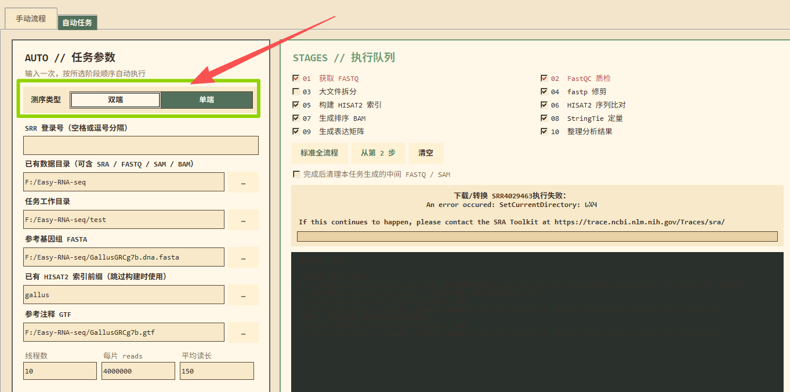

一键自动任务
参数只填一次，检查好阶段队列后点「开始自动运行」，程序按 01 → 10 顺序自动执行；也可以只跑其中一段。
AUTO // TaskFeatures · 功能
自动任务整合了转录组上游的多个分析步骤：输入一次参数，按所选阶段顺序自动执行，最后直接得到可用的表达矩阵。
参数只填一次，检查好阶段队列后点「开始自动运行」，程序按 01 → 10 顺序自动执行；也可以只跑其中一段。
AUTO // Task界面上直接切换双端或单端模式，程序按模式识别 _1.fastq / _2.fastq 配对或单文件处理，无需改脚本。
内置 SRA 工具：填入 SRR 登录号即可在线拉取并转成 FASTQ，也能把本地 .sra 文件批量转换，进度与命令实时回显。
测序文件过大时可自动拆分后再进入后续阶段，降低单次内存压力，让普通配置的电脑也能把流程跑完。
Step 03FastQC 质检、fastp 修剪、HISAT2 比对、samtools 排序、StringTie 定量 —— 文献里最常见的组合，结果便于与常规流程对照。
FastQC · fastp · HISAT2 · StringTie任务结束直接产出基因与转录本两级的 counts / FPKM / TPM 六张 CSV，拿去就能做差异表达与富集分析。
counts · FPKM · TPMPipeline · 执行队列
右侧队列中的每一步都可以单独勾选。点「标准全流程」跑完整链路，点「从第 2 步」跳过下载与转换直接分析已有 FASTQ。
队列旁还有 清空 与 完成后清理本任务生成的中间 FASTQ / SAM 两个选项：结果留在 10_results，体积很大的中间文件可以自动删掉，避免磁盘被占满。
Guide · 使用指引
以「公司已提供 FASTQ」为例：跳过第 1 步，把参考基因组准备好，剩下的交给程序。
SRA / FASTQ / SAM / BAM。.fasta 或 .fa。gallus）；已有索引时填前缀并取消勾选第 5 步。.gtf。


Output · 结果
任务完成后到「任务工作目录」下的 10_results 取结果，表达矩阵在 expression 子目录里。
任务工作目录/ 例：F:\Easy-RNA-seq\test ├─ 08_stringtie/ Step 08 定量结果 │ └─ quant/SRR4029464/SRR4029464.gtf ├─ 10_results/ ← 最终结果目录 │ └─ expression/ │ ├─ gene_counts.csv │ ├─ gene_fpkm.csv │ ├─ gene_tpm.csv │ ├─ transcript_counts.csv │ ├─ transcript_fpkm.csv │ └─ transcript_tpm.csv └─ sra_downloads/ 在线下载的 SRA 原始文件


Tool · SRA 转换器
公司给的是 SRA 文件，或者你只拿到 SRR 登录号？用内置的 SRA 转 FASTQ 工具（手动流程第 1 步），程序自动下载并转换，之后回到自动任务继续。
sra_downloads 子文件夹中。转换完成后，把结果目录填进自动任务的「已有数据目录」，点 从第 2 步 即可继续。若下载 / 转换失败并提示 SRA Toolkit 相关错误，先确认路径不含中文，再重试。


Requirements · 运行环境
Windows 桌面程序，绿色运行；但下面这些前置条件会直接影响能否跑通。
软件需要调用本机已安装的 Java 与 Python，请先装好并加入系统环境变量。
文件运行路径请使用纯英文、无空格与特殊字符的目录，例如 F:\Easy-RNA-seq\test。
FASTQ 与中间 SAM 体积较大；内存偏小时打开第 3 步「大文件拆分」，并适当调低线程数。
最常见的失败原因就是路径。把工程放在 D:\rna\test 这类纯英文路径下重跑，绝大多数「找不到文件 / 无法切换目录」的报错都会消失。
Service · 正版服务
软件打开即用 —— 不需要机器码，也没有任何验证步骤。我们为使用正版的用户提供完整的教程、更新与问题排查服务。
Our promise · 我们承诺提供服务
How to get service · 如何获得服务

Videos · 视频教程
以下教程视频发布在 Bilibili，建议先看「转录组上游分析大升级」快速上手。
FAQ · 常见问题
下面这些问题覆盖了绝大多数首次使用时的卡点。
不需要。在阶段队列里点 「从第 2 步」，然后把「已有数据目录」指向 FASTQ 所在文件夹即可，程序会直接从 FastQC 质检开始。
两种方式：① 直接在第 1 步「获取 FASTQ」里填入 SRR 登录号（多个用空格分隔），程序自动下载并转换；② 打开手动流程第 1 步的 SRA 转 FASTQ 工具，把本地 .sra 文件转成 FASTQ，再回到自动任务点「从第 2 步」。
九成是路径问题。文件运行路径不要包含中文和特殊符号，请把工程移到类似 F:\Easy-RNA-seq\test 的纯英文短路径下重跑。另外请确认本机已安装 Java 与 Python 并加入环境变量。

SetCurrentDirectory 报错时，先换纯英文路径重跑。下载失败常见于网络中断或路径含中文。先换纯英文路径重试；若持续失败，可到 SRA Toolkit 的支持页面 https://trace.ncbi.nlm.nih.gov/Traces/sra/ 查找对应报错，或把日志发给我们排查。
可以。在队列里勾上第 3 步 大文件拆分，把大 FASTQ 拆开后再进入后续阶段；同时把线程数调低一些（线程越高内存占用越大）。跑完后可用「完成后清理本任务生成的中间 FASTQ / SAM」回收磁盘。
能。把索引前缀填进「已有 HISAT2 索引前缀」，并取消勾选第 5 步「构建 HISAT2 索引」，程序会直接进入比对阶段，可省下大量时间。
结果在「任务工作目录」下的 10_results\expression，共六张 CSV：gene / transcript 两级 × counts / FPKM / TPM。都是标准表格，可直接用于差异表达、富集分析等下游步骤。
不需要激活码。软件打开即用，没有机器码，也没有任何验证步骤。购买后即可获得完整售后服务，不会二次收费。需要教程指引、版本更新或报错排查时，直接联系任老师、葛老师或加入售后 QQ 群即可。
本软件是我们独立开发的 Windows 程序，TBtools 官方客服没有本软件，也不提供本软件售后服务。请通过上方两位联系人或售后 QQ 群咨询，以免影响合作渠道。